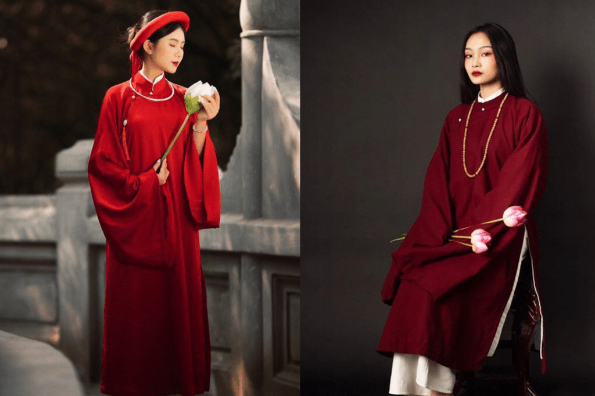

GIAI ĐOẠN 03
Áo dài ngũ thân
Biểu tượng của tầng lớp quý tộc.

LỊCH SỬ ÁO DÀI · 03
Áo dài ngũ thân
Dưới thời vua Gia Long (đầu thế kỷ 19), áo dài ngũ thân ra đời trên nền tảng áo tứ thân, nhưng có thêm một tà nhỏ bên trong, tượng trưng cho địa vị của người mặc. Áo được may theo dáng rộng, có cổ đứng và được tầng lớp quan lại, quý tộc ưa chuộng.
Với thiết kế kín đáo, lịch sự, áo dài ngũ thân được xem là tiền thân của áo dài hiện đại. Đến đầu thế kỷ 20, áo dài tiếp tục trải qua những thay đổi quan trọng, đưa nó từ một trang phục truyền thống sang một biểu tượng thời trang có tầm ảnh hưởng sâu rộng.
← Quay lại hành trình